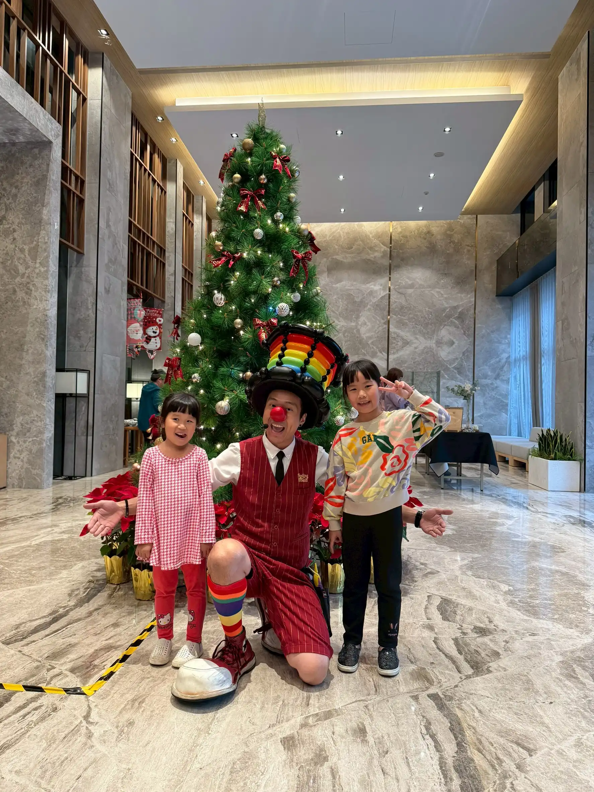
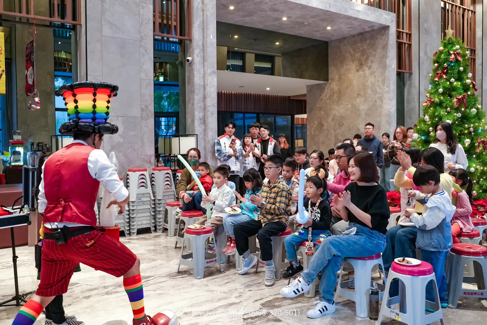
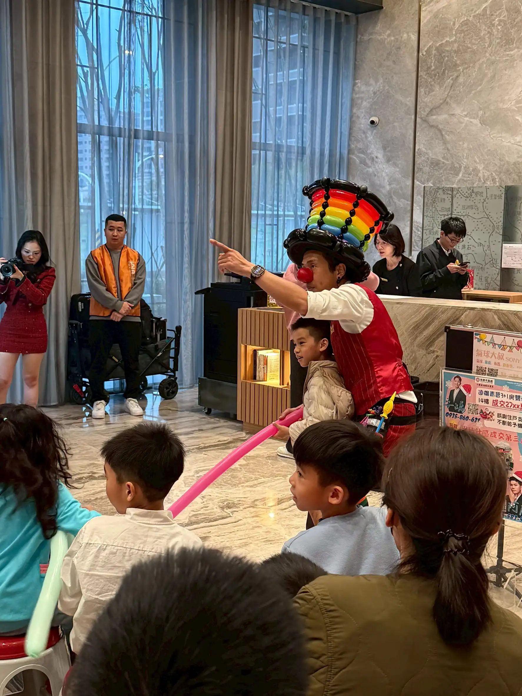
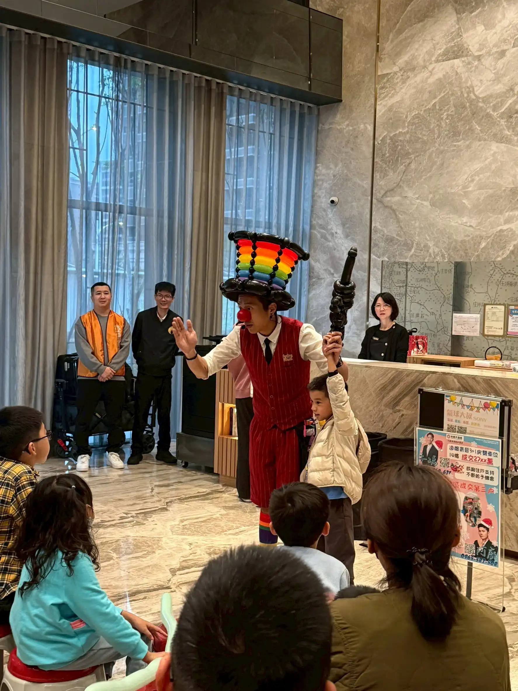
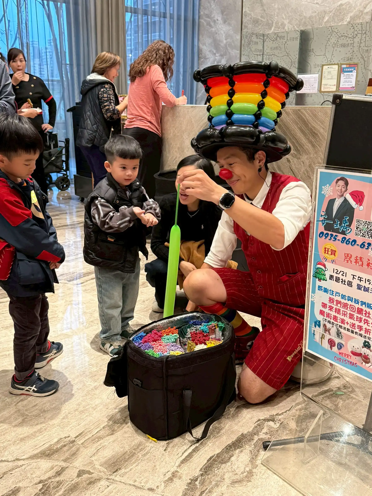
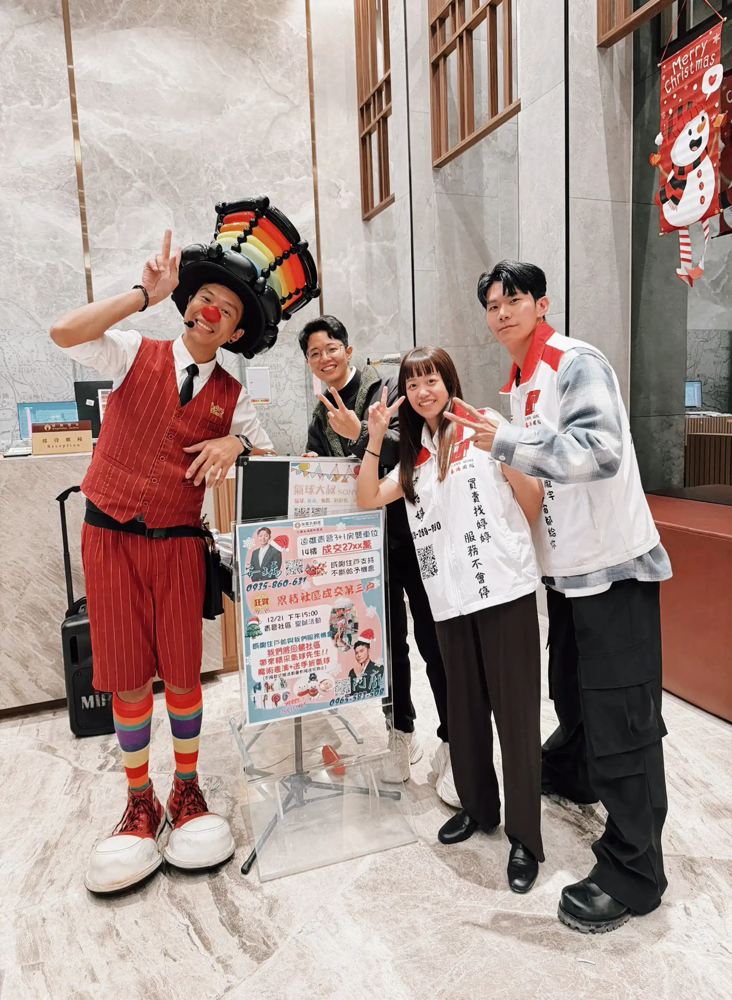

🎄 桃園小檜溪聖誕狂歡：遠雄青晉 × 永慶不動產鴻陞團隊
氣球魔術秀 High 翻全場，用歡笑打造最有溫度的社區聖誕回憶
📍 地點：桃園市小檜溪重劃區 遠雄青晉社區
質感社區的聖誕魔法：小檜溪的溫暖午後
隨著聖誕節腳步接近，社區活動也正式進入最熱鬧的節慶檔期。這次氣球大叔 Sony 來到近期桃園最受矚目的重劃區——小檜溪（青溪特區），街廓整齊新穎，整體氛圍舒服又有質感，而今天活動的場地「遠雄青晉」更是充滿現代感的社區代表。

一踏進大廳，映入眼簾的是裝飾得璀璨奪目的聖誕樹，搭配遠雄標誌性的石材與挑高設計，節慶氣氛一秒到位。這次活動也非常特別，特別感謝深耕在地的「永慶不動產 鴻陞團隊」用心贊助與安排，不只是提供資源，更用一場高品質的親子活動，真正把歡樂帶進社區、把溫度帶給住戶。
當天雖然外頭寒流來襲，但大廳內早早聚集滿滿家長與小朋友，舞台前座無虛席，連走道與後排都站了不少人。這種「全場期待、全場投入」的氛圍，讓我一上場就能量滿滿，準備把這個午後直接嗨到最高點！
互動零距離：笑聲與驚呼聲交織的魔術秀
這次我準備了「氣球魔術舞台秀」加上「精緻手折氣球送禮」的雙重內容。一開場，我戴著招牌的彩虹高帽登場，第一秒就成功吸住孩子們的目光，現場瞬間安靜，緊接著就是連續不斷的笑聲與掌聲。

「這不是一般的氣球，這是充滿魔法的氣球！」我在台上大聲說著，搭配誇張又逗趣的肢體動作，孩子們笑到停不下來。在互動環節，我挑選了幾位勇敢的小朋友上台參與。有位穿著羽絨外套的小弟弟，一開始雖然有點害羞，但當我把長條氣球變成一把帥氣寶劍交到他手上，他瞬間挺起胸膛、眼神發亮，那一刻真的超可愛。


🎁 專屬客製化：每一份都是心意
舞台表演結束後，緊接著是孩子們最期待的「定點氣球手折」時間。不同於舞台上的快速展演，這段時間我可以更近距離地與每一位住戶互動。有些小女生想要夢幻的愛心手杖，有些小男生指定要帥氣雷射槍，我都一一客製完成。看著孩子拿到作品後，迫不及待跑去向爸爸媽媽炫耀的表情，那份開心，永遠都是我最珍惜的舞台回饋。


💡 關於桃園社區氣球表演的常見問題
- Q: 在桃園小檜溪這類高品質社區舉辦聖誕派對，氣球表演的場地需要如何安排？
- A: 針對小檜溪（如遠雄青晉）這類具備氣派挑高大廳的社區，氣球大叔 Sony 建議將舞台設置在聖誕樹旁等具備節慶儀式感的背景前。我們自備專業行動音響設備，只需保留約 3x3 公尺的互動區域。這種佈置不僅能凝聚住戶目光，更能透過精緻的裝潢背景與氣球魔法交織，為社區留下最高質感的活動紀實影像。
- Q: 社區晚會若有像永慶不動產等企業團隊贊助，氣球大叔可以配合品牌宣導嗎？
- A: 絕對沒問題！我們非常歡迎企業團隊與社區聯名合作。Sony 老師擅長在表演中巧妙融入贊助方的品牌資訊，例如透過魔術互動口頭感謝鴻陞團隊，或是將氣球作品製作成具備品牌識別色的設計。這種軟性的置入不僅能增加活動的豐富度，更能建立住戶對贊助品牌的高度好感，達成社區、企業與表演者的三贏效果。
- Q: 針對聖誕節等熱門檔期，建議社區管委會多久前預約氣球大叔的檔期？
- A: 十二月是全台社區聖誕活動的高峰期，特別是週末時段。為了確保能預定到氣球大叔 Sony 的黃金時段，建議桃園各社區管委會或公關團隊至少提前 2 至 3 個月聯繫洽詢。提早預約不僅能穩固檔期，我們也能有更充裕的時間根據社區特性客製化聖誕主題的魔術橋段與特定的氣球造型方案。
如果您正在規劃社區晚會、聖誕派對、幼兒園活動或親子同樂場合，也歡迎直接參考大叔的 親子互動魔術秀 服務介紹。除了舞台互動魔術之外，也能依活動流程搭配表演後續的造型氣球派送，讓整場活動從開場到收尾都維持熱度與參與感。
🏢 正在為社區節慶晚會或企業贊助活動尋找亮點嗎？
讓管委會輕鬆辦好活動，也讓贊助品牌贏得住戶好感！大叔提供專為社區聚會與品牌造勢量身打造的企劃：
- 👉 需要完整聚客與品牌曝光的活動企劃？ 請參考：企業 / 品牌活動整合方案 (含社區專案)
- 👉 只想單純預約讓全場大笑的舞台互動秀？ 請參考：兒童互動魔術表演介紹
📅 本文整理於 2025 年 12 月 24 日，完整紀錄桃園小檜溪遠雄青晉真實活動現場氛圍。